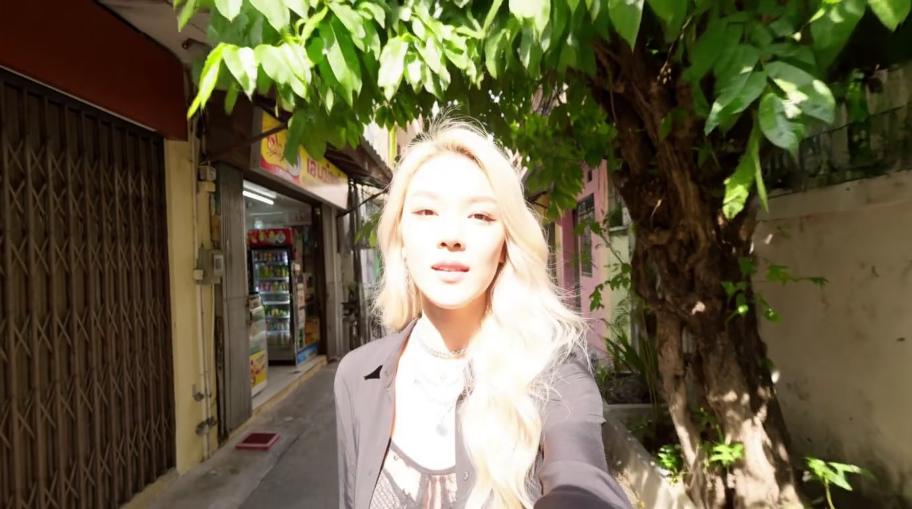
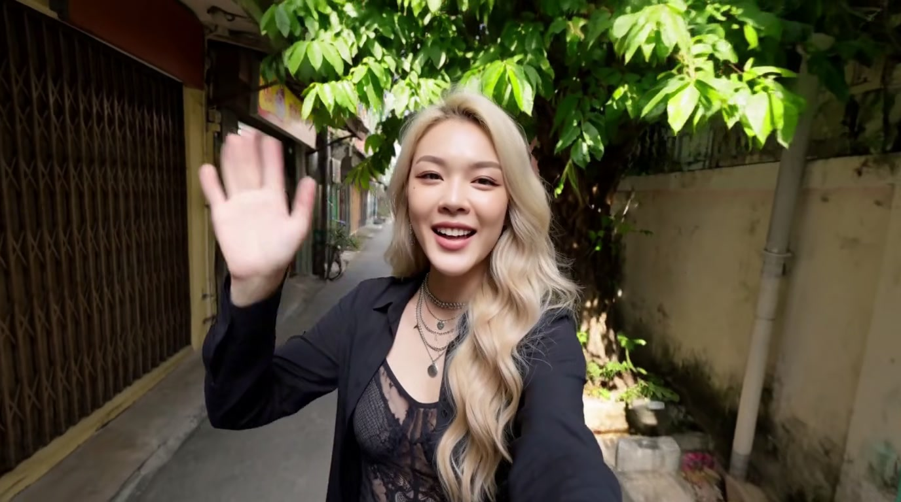
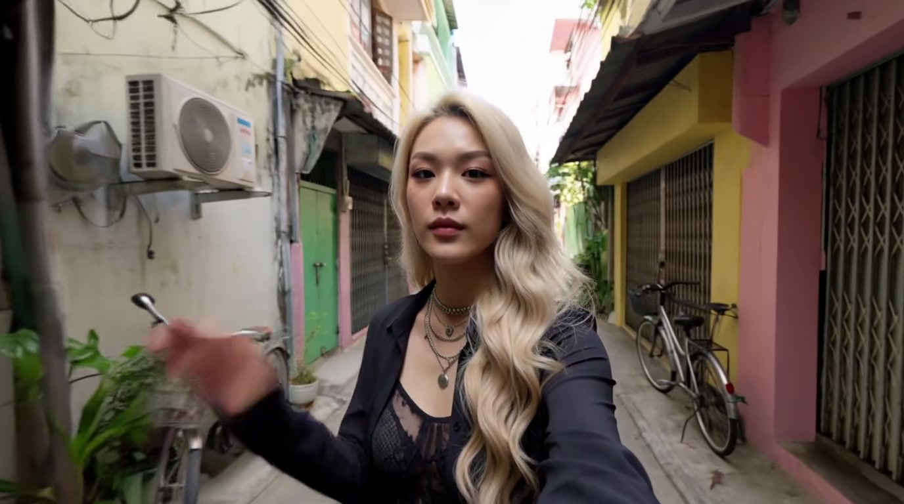

Regeneration after applying the three action-beat-defaults.md fixes to
part2-prompt-v2.md. Static snapshot (no embedded video — clips aren't stored
in-repo). The full interactive report (playable clip, scene-change chart) is published live:



| Fix | Result | Verdict |
|---|---|---|
| #1 shot-type lock restated at the backward-walk beat | Selfie framing holds continuously from 00:09.8 to the clip's end (15.08s). Peak scene-change score in that window is 0.061, in line with the clip's other ordinary motion peaks — not the divergence event v1 produced (0.113, the clip's own high point). | CONFIRMED |
| #2 camcorder texture cues restated at multiple beats | Overexposure bloom visible under the tree (~9.3s) and motion blur visible on the passing bicycle (~2.2s). Soft focus-pull and lens flare are not clearly distinguishable in sampled frames; overall image still reads closer to clean modern photorealism than genuine camcorder grain. | PARTIAL |
| #3 "pedal bicycle, no engine, no helmet" | Both the passing rider (~2.2s) and the parked bike (~3.5s) are genuine pedal bicycles — visible spoked wheels, no engine housing, no helmet. | CONFIRMED |
action-sequence-craft.md §4 for earlier generations on this pipeline.See references/action-beat-defaults.md for the full before/after analysis and
part2-prompt-v2.md for the corrected prompt.